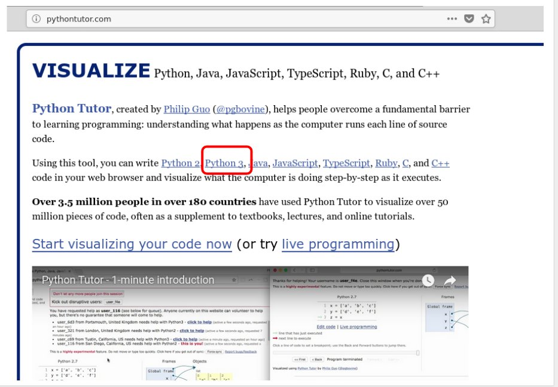
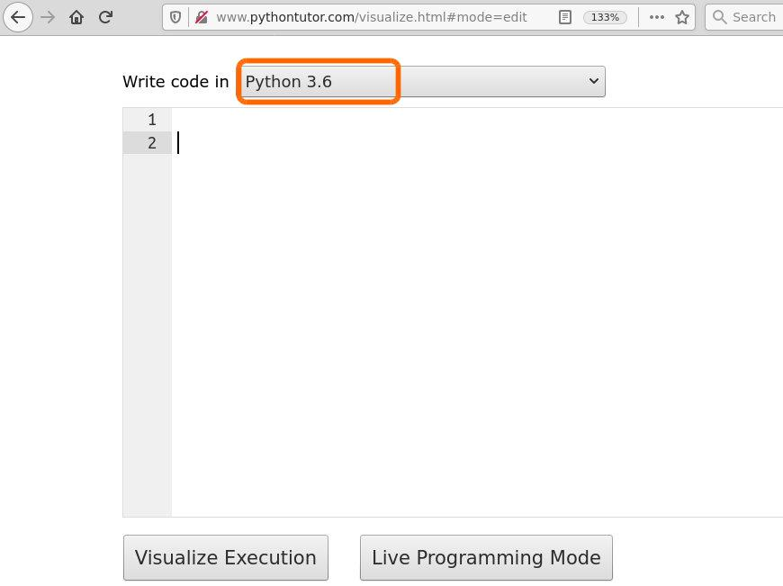
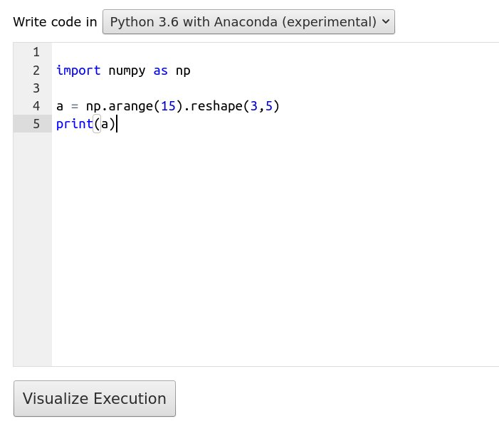

Strumenti e script¶
Scarica zip esercizi¶
REQUISITI:
Aver installati Python 3 e Jupyter: se non hai già provveduto, guarda Installazione
L’interprete Python¶
In queste guide usiamo estensivamente l’editor di notebook Jupyter, perchè ci permette di eseguire comodamente codice Python, mostrare grafici e prendere note. Ma se vogliamo solo far calcolare il computer non è affatto obbligatorio!
Il modo più immediato (per quanto non molto pratico) per eseguire codice Python è usando l’interprete da linea di comando nella cosiddetta modalità interattiva , cioè facendo in modo che attenda i comandi che verranno inseriti manualmente uno per uno. Questo uso non richiede Jupyter, basta avere installato Python. Nota che in Mac OS X e parecchi sistemi linux come Ubuntu, Python è installato di default , ma a volte può capitare che non sia la versione 3. Cerchiamo di capire che versione abbiamo installata noi.
Apriamo la console di sistema¶
Apri una console (in Windows: menu di sistema -> Anaconda Prompt,in Mac OS X: lancia il Terminale)
Nella console trovi il cosidetto prompt dei comandi. In questo prompt puoi dare comandi direttamente al sistema operativo.
ATTENZIONE: I comandi che dai nel prompt, sono comandi nel linguaggio del sistema operativo che stai usando, NON nel linguaggio Python !!!!!
In Windows dovresti vedere qualcosa del genere:
C:\Users\David>
In Mac / Linux potrebbe essere una cosa simile a questa:
david@mio-computer:~$
Listare i file e cartelle¶
Nella console di sistema, prova per esempio a
su Windows: scrivere il comando dir e digitare il tasto Invio.
su Mac o Linux: scrivere il comando ls e digitare il tasto Invio.
Dovrebbe apparire un elenco di tutti i file nella cartella corrente. Nel mio caso appare una lista del genere:
RIPETO: in questo contesto dir ed ls sono comandi del sistema operativo, NON di Python !!
Windows:
C:\Users\David> dir
Arduino gotysc program.wav
a.txt index.html Public
CART java0.log RegDocente.pdf
backupsys java1.log
BaseXData java_error_in_IDEA_14362.log
Mac / Linux:
david@david-computer:~$ ls
Arduino gotysc program.wav
a.txt index.html Public
CART java0.log RegistroDocenteStandard(1).pdf
backupsys java1.log RegistroDocenteStandard.pdf
BaseXData java_error_in_IDEA_14362.log
Lanciamo l’interprete Python¶
Sempre nella console di sistema aperta, scrivi semplicemente il comando python:
ATTENZIONE: Se Python non parte, prova a scrivere python3 con il 3 alla fine di python
C:\Users\David> python
Dovresti veder apparire qualcosa di simile (ma molto probabilmente NON uguale). Nota che nella prima riga è contenuta la versione di Python. Se inizia con 2., allora non stai usando quella giusta per questo corso - in quel caso prova a uscire dall’interprete (vedi come uscire) e poi scrivi python3
Python 3.5.2 (default, Nov 23 2017, 16:37:01)
[GCC 5.4.0 20160609] on windows
Type "help", "copyright", "credits" or "license" for more information.
>>>
ATTENZIONE al triplo maggiore >>> all’inizio!
Il triplo maggiore >>> all’inizio indica che a differenza di prima adesso la console si sta aspettando comandi in linguaggio Python. Quindi, i comandi di sistema che abbiamo usato prima (cd, dir, …) NON funzioneranno più, o daranno risultati diversi !!!!
Adesso la console si aspetta comandi Python, prova ad inserire 3 + 5 e poi premi Invio:
ATTENZIONE tu NON scrivere >>>, scrivi solo il comando che appare dopo !
>>> 3 + 5
Dovrebbe apparire la scritta 8
8
Oltre ai calcoli, potremmo dire a Python di stampare qualcosa con la funzione print("ciao")
>>> print("ciao")
ciao
Uscire dall’interprete¶
Per uscire dall’interprete Python e tornare al prompt di sistema (per intenderci, quello che accetta i comandi cd e dir), scrivi il comando Python exit()
Dopo che sei effettivamente uscito dall’interprete Python, il triplo >>> deve essere sparito (cioè non deve stare all’inizio della linea dove darai nuovi comandi)
In Windows, dovresti vedere un risultato simile:
>>> exit()
C:\Users\David>
in Mac / Linux potrebbe essere così:
>>> exit()
david@mio-computer:~$
Adesso potresti tornare ad eseguire comandi per il sistema operativo come dir e cd
Windows:
C:\Users\David> dir
Arduino gotysc program.wav
a.txt index.html Public
CART java0.log RegDocente.pdf
backupsys java1.log
BaseXData java_error_in_IDEA_14362.log
Mac:
david@david-computer:~$ ls
Arduino gotysc program.wav
a.txt index.html Public
CART java0.log RegistroDocenteStandard(1).pdf
backupsys java1.log RegistroDocenteStandard.pdf
BaseXData java_error_in_IDEA_14362.log
Moduli¶
I moduli Python sono semplicemente dei file di testo che hanno l’estensione .py (per es. prova.py). Quando stai scrivendo codice in un editor, di fatto stai implementando il modulo corrispondente.
In Jupyter usiamo file notebook con estensione .ipynb, ma per editarli serve necessariamente Jupyter.
Con i file .py (detti anche script ) possiamo invece usare un qualsiasi editor di testo, e possiamo poi dire all’interprete di eseguire il file. Vediamo come si fa.
Editor di testo semplice¶
Con un editor di testo (Blocco note in Windows, o TextEdit in Mac Os X) crea un file di testo, e metti all’interno questo codice
x = 3
y = 5
print(x + y)
Proviamo a salvarlo - sembra semplice, ma non lo è sempre, leggi bene!
ATTENZIONE: Al momento di salvare il file, assicurati che il file abbia estensione .py !!
Supponiamo di creare il file prova.py all’interno di una cartella chiamata CART:
WINDOWS: Se usi Blocco Note, nella finestra di salvataggio devi impostare Salva come a Tutti i file (altrimenti il file verrà salvato erroneamente come
prova.py.txt!)MAC: se usi TextEdit, prima di salvare clicca Formato e poi Converti in formato Solo testo: se dimentichi questo passaggio, TextEdit nella finestra di salvataggio non ti darà modo di salvarlo nel formato giusto e probabilmente finirai con un file .rtf che non ci interessa
Apri una console (in Windows: menu di sistema -> Anaconda Prompt,in Mac OS X: lancia il Terminale)
La console apre il cosidetto prompt dei comandi. In questo prompt puoi dare comandi direttamente al sistema operativo (vedi paragrafo precedente)
ATTENZIONE: I comandi che dai nel prompt, sono comandi nel linguaggio del sistema operativo che stai usando, NON nel linguaggio Python !!!!!
In Windows dovresti vedere qualcosa del genere:
C:\Users\David>
In Mac / Linux :
david@david-mio-computer:~$
Prova per esempio a scrivere il comando dir (o ls per Mac / Linux) che mostra tutte i file nella cartella corrente. Nel mio caso appare una lista del genere:
RIPETO: in questo contesto dir / ls sono comando del sistema operativo, NON di Python.
C:\Users\David> dir
Arduino gotysc program.wav
a.txt index.html Public
CART java0.log RegDocente.pdf
backupsys java1.log
BaseXData java_error_in_IDEA_14362.log
Se noti, nella lista appare CART, dove ho messo prova.py. Per entrare nella cartella dal prompt, devi usare il comando del sistema operativo cd come segue
Per entrare in una cartella che si chiama CART, scrivere
cd CART:
C:\Users\David> cd CART
C:\Users\David\CART>
E se sbaglio cartella?
Se per caso entri nella cartella sbagliata, tipo CAVOLATE, per andare indietro di una cartella, scrivere cd .. (NOTA: cd è seguito da spazio e DUE punti .. uno dopo l’altro )
C:\Users\David\CAVOLATE> cd ..
C:\Users\David\>
Assicurati di essere nella cartella che contiene
prova.py. Se non lo sei, usa i comandicdecd ..come sopra per navigare le cartelle.
Vediamo cosa c’è in CART con il comando di sistema dir (o ls se usi Mac/Linux):
RIPETO: in questo contesto dir (o ls) è un comando del sistema operativo, NON di Python.
C:\Users\David\CART> dir
prova.py
dir ci sta dicendo che in CART c’è il nostro file prova.py.
Da dentro la cartella
CART, scrivipython prova.py
C:\Users\David\CART>python prova.py
ATTENZIONE: Se Python non parte, prova a scrivere python3 prova.py con il 3 alla fine di python
Se tutto è andato bene, dovresti veder apparire
8
C:\Users\David\CART>
ATTENZIONE: Dopo l’esecuzione di uno script in questo modo, la console si aspetta di nuovo comandi di sistema, NON comandi Python (quindi non dovrebbe esserci il triplo maggiore >>>)
IDE¶
In queste guide lavoriamo su notebook Jupyter con estensione .ipynb, ma per editare file sorgenti .py lunghi conviene usare editor più tradizionali, detti anche IDE (Integrated Development Environment). Per Python possiamo usare Spyder, Visual Studio Code o PyCharme Community Edition.
Rispetto a Jupyter, questi editor permettono più agevolmente di debuggare e testare il codice.
Facciamo una prova con Spyder, che è il più semplice - se hai Anaconda, lo trovi disponibile dentro l’Anaconda Navigator.
INFO: Quando lanci Spyder, potrebbe richiederti di effettuare un aggiornamento (upgrade), ma puoi tranquillamente cliccare No.
Nella parte sinistra dell’editor si vede il codice del file .py che stai editando. Tali file sono detti anche script . Nella parte destra in basso si vede la console con l’interprete IPython (che è lo stesso alla base di Jupyter, qui in versione testuale). Quando esegui lo script, è come immettere i comandi in quell’interprete.
Per eseguire tutto lo script: premi
F5Per eseguire solo la linea corrente o la selezione: premi
F9Per ripulire la memoria: dopo molte esecuzioni le variabili nella memoria dell’interprete potrebbero assumere valori che non ti aspetti. Per ripulire la memoria, clicca sull’ingranaggio a destra del riquadro della console, e seleziona Restart kernel
ESERCIZIO: fai delle prove, riprendendo il file prova.py di prima:
x = 3
y = 5
print(x + y)
una volta che il codice è nello script, premi
F5seleziona solo
print(x+y)e premi F9seleziona solo
x=3e premi F9clicca sull’ingranaggio a destra del riquadro della console, e seleziona Restart kernel, poi seleziona solo
print(x+y)e premiF9. Che succede?
Ricordati che se la memoria dell’interprete è stata ripulita con Restart kernel e poi provi ad eseguire una riga di codice con variabili definite in linee che non sono stati eseguite prima, Python non saprà a che variabili ti stai riferendo e mostrerà un NameError

Jupyter¶
Jupyter è un editor che ti permette di lavorare sui cosiddetti notebook , che sono file che finiscono con l’estensione .ipynb. Sono documenti divisi in celle dove per ogni cella puoi immettere dei comandi e vederne subito il rispettivo output. Proviamo ad aprire questo.
scompatta lo zip degli esercizi in una cartella, dovresti ottenere qualcosa del genere:
tools
tools-sol.ipynb
tools.ipynb
jupman.py
ATTENZIONE: Per essere visualizzato correttamente, il file del notebook DEVE essere nella cartella szippata.
apri il Jupyter Notebook da quella cartella. Due cose dovrebbero aprirsi, prima una console e poi un browser. Il browser dovrebbe mostrare una lista di file: naviga la lista e apri il notebook
tools.ipynb
ATTENZIONE: apri quello SENZA il -sol alla fine!
Vedere subito le soluzioni è troppo facile ;-)
ATTENZIONE: Se non trovi Jupyter / qualcosa non funziona, guarda la guida per l’installazione
Prosegui leggendo il file degli esercizi, ogni tanto al suo interno troverai delle scritte ESERCIZIO, che ti chiederanno di scrivere dei comandi Python nelle celle successive. Gli esercizi sono graduati per difficoltà, da una stellina ✪ a quattro ✪✪✪✪
ATTENZIONE: In questo libro usiamo SOLO PYTHON 3
Se per caso ottieni comportamenti inattesi, controlla di usare Python 3 e non il 2. Se per caso il tuo sistema operativo scrivendo python fa partire il 2, prova ad eseguire il tre scrivendo il comando: python3
Scorciatoie da tastiera:
Per eseguire il codice Python dentro una cella di Jupyter, premi
Control+InvioPer eseguire il codice Python dentro una cella di Jupyter E selezionare la cella seguente, premi
Shift+InvioPer eseguire il codice Python dentro una cella di Jupyter E creare una nuova cella subito dopo, premi
Alt+InvioSe per caso il Notebook sembra inchiodato, prova a selezionare
Kernel -> Restart
ESERCIZIO: Proviamo a inserire un comando Python: scrivi nella cella qua sotto 3 + 5, e poi mentre sei in quella cella premi i tasti speciali Control+Invio. Come risultato, dovresti vedere apparire il numero 8
[ ]:
ESERCIZIO: in Python possiamo scrivere commenti iniziando una riga con un cancelletto #. Come prima, scrivi nella cella sotto 3 + 5 ma questa volta scrivilo nella riga sotto la scritta # scrivi qui:
[2]:
# scrivi qui
ESERCIZIO: Jupyter per ogni cella mostra il risultato solo dell’ultima riga eseguita in quella cella. Prova a inserire questo codice nella cella sotto ed esegui premendo Control+Invio. Che risultato appare?
3 + 5
1 + 1
[3]:
# scrivi qui
ESERCIZIO: Proviamo adesso a creare noi una nuova cella.
Mentre sei con il cursore in questa cella, premi
Alt+Invio. Si dovrebbe creare una nuova cella dopo la presente.Nella cella appena creata, inserisci
2 + 3e poi premiShift+Invio. Cosa succede al cursore? prova la differenze conControl+Invio. Se non capisci la differenza, prova a premere ripetutamenteShif+Invioe vedi che succede.
Stampare una espressione¶
Proviamo ad assegnare una espressione ad una variabile:
[4]:
monete = 3 + 2
Nota che l’assegnazione di per sè non produce nessun output nella cella di Jupyter. Possiamo chiedere a Jupyter quanto vale la variabile semplicemente riscrivendo il nome in una cella:
[5]:
monete
[5]:
5
L’effetto è (quasi sempre) lo stesso che otterremmo chiamando esplicitamente la funzione print:
[6]:
print(monete)
5
Qual’è la differenza? Jupyter per nostra comodità ci mostra direttamente il risultato dell’ultima espressione eseguita in una cella, ma solo dell’ultima:
[7]:
monete = 4
2 + 5
monete
[7]:
4
Se vogliamo essere sicuri di stampare entrambe, dobbiamo usare la print:
[8]:
monete = 4
print(2 + 5)
print(monete)
7
4
Inoltre, il risultato dell’ultima espressione è mostrato solo nei fogli Jupyter, se stai scrivendo un normale script .py e vuoi vedere risultati devi in ogni caso usare la print.
Volendo stampare più espressioni su una stessa riga, possiamo passarle come parametri differenti a print separandole da una virgola:
[9]:
monete = 4
print(2+5,monete)
7 4
A print possiamo passare quante espressioni vogliamo:
[10]:
monete = 4
print(2 + 5, monete, monete*3)
7 4 12
Se vogliamo mostrare anche del testo, possiamo scriverlo creando delle cosiddette stringhe tra doppie virgolette (in seguito vedremo le stringhe molto più nel dettaglio):
[11]:
monete = 4
print("Abbiamo", monete, "monete d'oro, ma ci piacerebbe averne il doppio:", monete * 2)
Abbiamo 4 monete d'oro, ma ci piacerebbe averne il doppio: 8
DOMANDA: Guarda le espressioni seguenti, e per ciascuna cerca di indovinare quale risultato produce. Prova a verificare le tue supposizioni sia in Jupyter che un’altro editor di file .py come Spyder:
x = 1 x x
x = 1 x = 2 print(x)
x = 1 x = 2 x
x = 1 print(x) x = 2 print(x)
print(zam) print(zam) zam = 1 zam = 2
x = 5 print(x,x)
x = 5 print(x) print(x)
tappeti = 8 lunghezza = 5 print("Se ho", tappeti, "tappeti in fila cammino per", tappeti * lunghezza, "metri.")
tappeti = 8 lunghezza = 5 print("Se", "ho", tappeti, "tappeti", "in","fila","cammino", "per", tappeti * lunghezza, "metri.")
Esercizio - castelli per aria¶
Date due variabili
castelli = 7
dirigibili = 4
scrivi del codice che stampa:
Ho costruito 7 castelli per aria
Ho 4 dirigibili a vapore
Ne voglio parcheggiare uno per castello
perciò ne acquisterò altri 3 al Mercato del Vapore
NON mettere costanti numeriche nel tuo codice come
7,4o3! Scrivi del codice generico che usa solo le variabili fornite.
[12]:
castelli = 7
dirigibili = 4
# scrivi qui
Ho costruito 7 castelli per aria
Ho 4 dirigibili a vapore
Ne voglio parcheggiare uno per castello
perciò ne acquisterò altri 3 al Mercato del Vapore.
Visualizzare l’esecuzione con Python Tutor¶
Abbiamo visto i principali tipi di dati. Prima di procedere oltre, è bene vedere gli strumenti giusti per comprendere al meglio cosa succede quando si esegue il codice. Python tutor è un ottimo sito online per visualizzare online l’esecuzione di codice Python, permettendo di andare avanti e indietro nell’esecuzione del codice. Sfruttatelo più che potete, dovrebbe funzionare con parecchi degli esempi che tratteremo a lezione. Vediamo un esempio.
Python tutor 1/4
Vai sul sito pythontutor.com e seleziona Python 3

Python tutor 2/4

Python tutor 3/4

Python tutor 4/4

Debuggare codice in Jupyter¶
Python tutor è fantastico, ma quando esegui del codice in Jupyter e non funziona, come si può fare? Per ispezionare l’esecuzione, gli editor di solito mettono a disposizione uno strumento chiamato debugger, che permette di eseguire le istruzioni una per una. Al momento (Agosto 2018), il debugger di Jupyter che si chiama pdb è estramamente limitato . Per superarne le limitazioni, in questo corso ci siamo inventati una soluzione di ripiego, che sfrutta Python Tutor.
Se inserisci del codice Python in una cella, e poi alla fine della cella scrivi l’istruzione jupman.pytut(), come per magia il codice precedente verrà visualizzato all’interno del foglio Jupyter con il debugger di Python Tutor.
ATTENZIONE: jupman è una collezione di funzioni di supporto che ci siamo inventati apposta per questo corso.
Quando vedi comandi che iniziano con jupman, affinchè funzionino devi prima eseguire la cella in cima al documento. Riportiamo tale cella qua per comodità. Se non lo hai già fatto, eseguila adesso.
[13]:
# Ricordati di eseguire questa cella con Control+Invio
# Questi comandi dicono a Python dove trovare il file jupman.py
import jupman;
Adesso siamo pronti a provare Python tutor con la funzione magica jupman.pytut():
[14]:
x = 5
y = 7
z = x + y
jupman.pytut()
[14]:
Python Tutor : Limitazione 1¶
Python tutor è comodo, ma ci sono importanti limitazioni:
ATTENZIONE: Python Tutor guarda dentro una cella sola!
Quando usi Python tutor dentro Jupyter, l’unico codice che viene considerato da Python tutor è quello dentro la cella dove sta il comando jupman.pytut().
Quindi per esempio in queste due celle che seguono, solo print(w) apparirà dentro Python tutor senza il w = 3. Se proverai a cliccare Forward in Python tutor, ti verrà segnalato che non è stata definita w
[15]:
w = 3
[16]:
print(w)
jupman.pytut()
3
Traceback (most recent call last):
File "../jupman.py", line 2305, in _runscript
self.run(script_str, user_globals, user_globals)
File "/usr/lib/python3.5/bdb.py", line 431, in run
exec(cmd, globals, locals)
File "<string>", line 2, in <module>
NameError: name 'w' is not defined
[16]:
Per funzionare in Python Tutor devi mettere TUTTO il codice nella STESSA cella:
[17]:
w = 3
print(w)
jupman.pytut()
3
[17]:
Python Tutor : Limitazione 2¶
ATTENZIONE: Python Tutor usa solo funzioni dalla distribuzione standard di Python
Python Tutor va bene per ispezionare semplici algoritmi con funzioni di base di Python, se usi librerie fatte da terze parti non funzionerà.
Se usi qualche libreria tipo numpy, puoi provare solo online a selezionare Python 3.6 with anaconda

Esercizio - taverna¶
Date le variabili
pirati = 10
ognuno_vuole = 5 # boccali di grog
barili = 4
capienza_barile = 20 # boccali di grog
Prova a scrivere qua sotto del codice che stampi questo:
Nella taverna ci sono 10 pirati, ognuno vuole 5 boccali di grog
Abbiamo 4 barili di grog pieni
Da ogni barile possiamo prendere 20 boccali
Stasera i pirati berranno 50 boccali, ne avanzano 30 per domani
NON usare costanti numeriche nel tuo codice, usa invece le variabili proposte
Per tener traccia dei boccali avanzati, crea una variabile apposita
boccali_avanzatiSe stai usando Jupyter, prova ad usare
jupman.pytut()alla fine della cella per visualizzare l’esecuzione
[18]:
pirati = 10
ognuno_vuole = 5 # boccali di grog
barili = 4
capienza_barile = 20 # boccali di grog
# scrivi qui
Nella taverna ci sono 10 pirati, ognuno vuole 5 boccali di grog
Abbiamo 4 barili di grog pieni
Da ogni barile possiamo prendere 20 boccali
Stasera i pirati berranno 50 boccali, ne avanzano 30 per domani
Architettura di Python¶
La parte che segue non è strettamente fondamentale ai fini del libro, ma serve per capire cosa succede sotto il cofano quando esegui dei comandi.
Torniamo a Jupyter: l’editor di notebook Jupyter è uno strumento molto potente e flessibile, permette di eseguire codice Python, ma non solo, anche codice scritto in altri linguaggi di programmazione (R, Bash, etc) e linguaggi di formattazione (Markdown, Latex, etc).
Quindi dobbiamo tenere presente che il codice Python che scrivi nelle celle di questi notebook Jupyter (che sono file con estensione .ipynb) non viene certo magicamente compreso dal tuo computer. Sotto il cofano, vengono effettuate diverse trasformazioni che permettono al processore del tuo computer di capire che istruzioni vuoi che esegua. Riportiamo qua le principali trasformazioni che avvengono, a partire da Jupyter fino al processore:
Python è un linguaggio d’alto livello¶
Cerchiamo di capire bene che succede quando esegui una cella:
codice sorgente: Prima il notebook Jupyter guarda se hai scritto del codice sorgente Python nella cella (invece che altri linguaggi come di programmazione come R, Bash o formattazione come Markdown …). Di default Jupyter assume che il codice che stai scrivendo è Python. Supponiamo che ci sia il seguente codice:
x = 3
y = 5
print(x + y)
ESERCIZIO: Senza andare nel dettaglio del codice, prova a copia/incollarlo nella cella qua sotto. Assicurandoti di avere il cursore nella cella, eseguila digitando Control + Invio. Quando la esegui dovrebbe apparire un 8 come risultato del calcolo. Il # scrivi qui sotto come tutte le righe che iniziano con un cancelletto # è solo un commento che verrà ignorato da Python:
[19]:
# scrivi qui sotto
Se sei riuscito ad eseguire il codice, puoi fare i complimenti a Python! Ti ha permesso di eseguire un programma scritto in un linguaggio abbastanza comprensibile indipendentemente dal tuo sistema operativo (Windows, Mac Os X, Linux …) e dal processore del tuo computer (x86, ARM, …)! Non solo, l’editor di notebook Jupyter ti ha anche fatto la cortesia di mostrare il risultato nel tuo browser.
Più in dettaglio, cos’è successo ? Vediamo meglio:
bytecode: Al momento della richiesta d’esecuzione, Jupyter ha preso il testo scritto dalla cella, e lo ha mandato al cosidetto compilatore Python che lo ha trasformato in bytecode. Il bytecode è una sequenza di istruzioni più lunga e meno comprensibile per noi umani (è solo un esempio, non serve che lo capisci !!):
2 0 LOAD_CONST 1 (3)
3 STORE_FAST 0 (x)
3 6 LOAD_CONST 2 (5)
9 STORE_FAST 1 (y)
4 12 LOAD_GLOBAL 0 (print)
15 LOAD_FAST 0 (x)
18 LOAD_FAST 1 (y)
21 BINARY_ADD
22 CALL_FUNCTION 1 (1 positional, 0 keyword pair)
25 POP_TOP
26 LOAD_CONST 0 (None)
29 RETURN_VALUE
codice macchina: L’interprete Python ha preso il bytecode qua sopra una istruzione alla volta, e lo ha convertito in codice macchina che può essere effettivamente compreso dal processore (CPU) del computer. A noi il codice macchina può sembrare ancora più lungo e più brutto del bytecode ma il processore è contento e leggendolo produce i risultati del programma. Esempio di codice macchina (è solo un esempio, non serve che lo capisci !!):
mult:
push rbp
mov rbp, rsp
mov eax, 0
mult_loop:
cmp edi, 0
je mult_end
add eax, esi
sub edi, 1
jmp mult_loop
mult_end:
pop rbp
ret
Riportiamo quanto detto qua sopra in questa tabella. Nella tabella esplicitiamo anche l’estensione dei file in cui possiamo scrivere i vari formati del codice.
Quelle che interessano a noi sono i notebook Jupyter
.ipynbed i file di codice sorgente Python.pyI
.pycpossono venire generati dal compilatore quando legge i file.py, ma a noi non interessano - non avremo mai la necessità di editarliIl codice macchina
asmpure non ci interessa
Strumento |
Linguaggio |
File |
esempio |
|---|---|---|---|
Notebook Jupyter |
Python |
.ipynb |
|
Compilatore Python |
codice sorgente Python |
.py |
|
Interprete Python |
bytecode Python |
.pyc |
|
Processore (CPU) |
Codice macchina |
.asm |
|
Adesso che abbiamo un idea di quello che succede, possiamo forse capire meglio l’affermazione che Python è un linguaggio d’alto livello, cioè sta alto nella tabella qua sopra: quando scriviamo codice Python, non ci interessa per nulla del bytecode o del codice macchina che viene generato, ma possiamo concentrarci sulla logica del programma. Inoltre, il codice Python che scriviamo è indipendente dall’architettura dei pc: se abbiamo un interprete Python installato su un computer, si prenderà cura lui di convertire il codice d’alto livello nel codice macchina particolare di quella architettura, che include sistema operativo (Windows / Mac Os X / Linux) e processore (x86, ARM, PowerPC, etc).
Performance¶
Tutto ha un prezzo. Se vogliamo poter scrivere programmi concentrandoci sulla logica ad alto livello senza entrare nei dettagli di come viene interpretato dal processore, dobbiamo tipicamente rinunciare alle performance. Python, essendo un linguaggio interpretato ha il difetto di essere lento. Ma se abbiamo bisogno di efficienza, che facciamo ? Per fortuna Python può essere esteso con codice scritto in linguaggio C che tipicamente è molto più performante. Infatti, anche se non te ne accorgerai, tante delle funzionalità di Python sotto sotto sono state scritte direttamente nel veloce linguaggio C. Se proprio abbiamo bisogno di performance (ma non in questo corso!) può valer la pena prima scrivere un prototipo in Python e poi, una volta stabilito che funziona, compilarlo in linguaggio C con il compilatore Cython e ottimizzare a mano il codice generato.
[ ]: